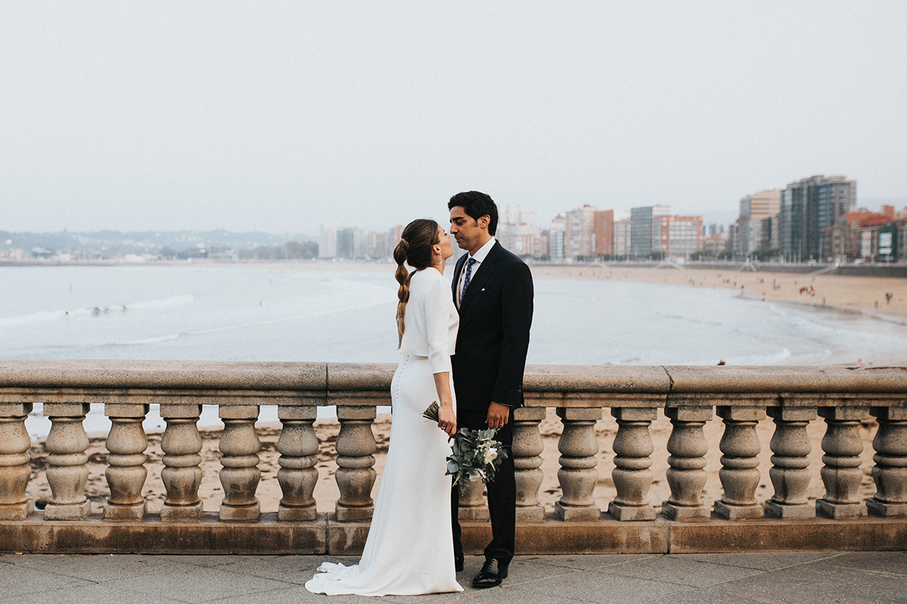
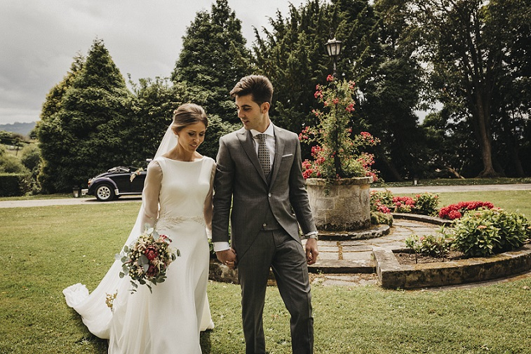
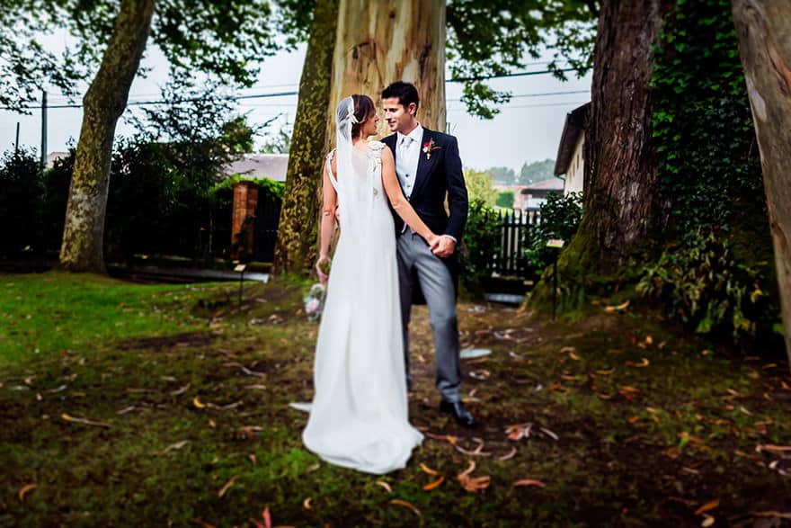
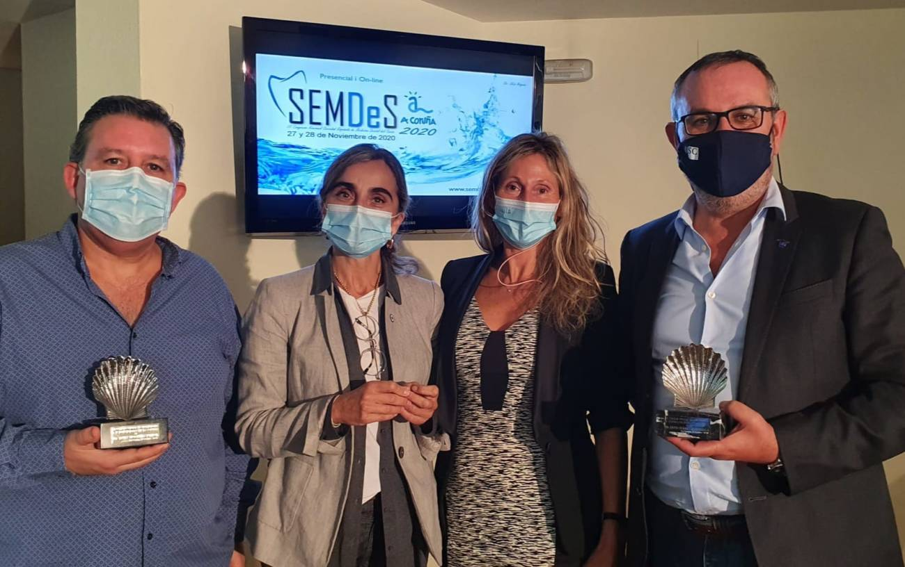
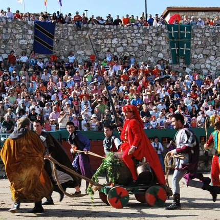
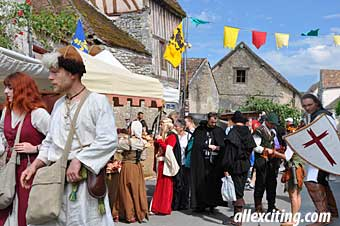
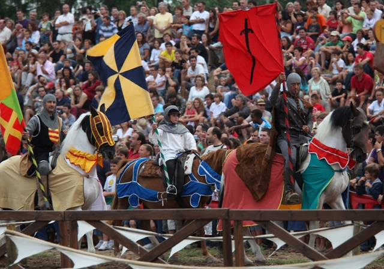

Listado de últimos trabajos realizados por Ondas Video
Numero total archivos: 1
Peso: 3463 bytes
Archivo[0] = trabajos.xml Tamaño: 3463 bytes Tipo: text/xml
Boda en Gijón
Gijón
latitud:
43.535159
longitud:
-5.657812
altitud:
100
tiempo transcurrido:
120
fecha:
2020-09-24
descripcion:
Boda estándard sin banquete
materiales:
nombre: Renault kangoo
tipo: Transporte
nombre: Red ranger
tipo: Grabación
nombre: Trípode red ranger
tipo: Grabación
precio:
120
Fotografías:



Congreso Avilés
Avilés
latitud:
43.558724
longitud:
-5.924543
altitud:
400
tiempo transcurrido:
240
fecha:
2021-03-24
descripcion:
Congreso del colegio de médicos de Asturias
materiales:
nombre: Opel Vivaro
tipo: Transporte
nombre: Sony xp0893
tipo: Grabación
nombre: Trípode sony
tipo: Grabación
precio:
1200
Fotografías:

Semana cultural Ávila
Ávila
latitud:
42.599687
longitud:
-5.566748
altitud:
1000
tiempo transcurrido:
420
fecha:
2021-09-24
descripcion:
Semana cultural en Ávila
materiales:
nombre: Renault kangoo
tipo: Transporte
nombre: Red ranger
tipo: Grabación
nombre: Trípode red ranger
tipo: Grabación
nombre: Sony gtx8934
tipo: Grabación
nombre: Trípode sony
tipo: Grabación
precio:
120
Fotografías:


